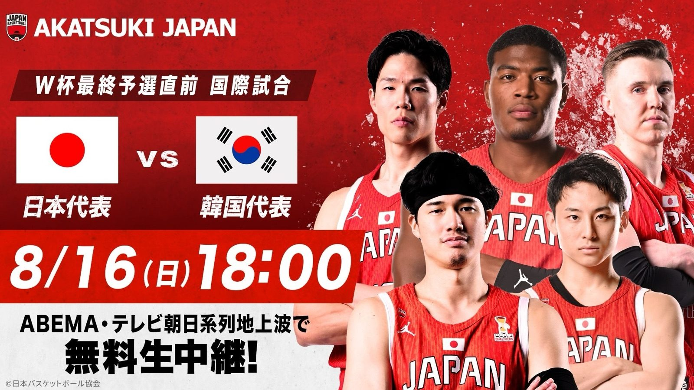

有明に、日の丸のエースが帰ってきた —— 八村塁と河村勇輝、約2年ぶりの代表戦をABEMAが無料生中継
2026年8月16日（日）夜7時5分、有明アリーナでTIP OFF。バスケットボール男子日本代表の国際強化試合・韓国戦を、ABEMAが無料生中継する——株式会社AbemaTVが8月12日にそう発表した。ただの強化試合ではない。コートに立つ予定の名前に、八村塁と河村勇輝がある。

パリから、およそ2年
2人が男子日本代表戦のコートに立つのは、2024年のパリオリンピック以来、およそ2年ぶりになる。NBAで戦う2人が同時に日の丸へ戻ってくる意味は、対戦相手が誰かということ以上に大きい。JBAは8月11日から有明アリーナで直前合宿を張り、この一戦に照準を合わせてきた。
中継の布陣も「代表級」
中継には、元日本代表の辻直人と田中大貴が解説として入り、現地リポートはベンドラメ礼生が担当する。コートを知る人間たちの言葉で試合を追える無料生中継だ。ABEMAに加えて、テレビ朝日系列でも放送が予定されている。
この一戦の先にあるもの
韓国戦は、FIBAバスケットボールワールドカップ2027 アジア地区予選「Window4」——8月27日のサウジアラビア戦、8月31日のカタール戦——へ向けた実戦の場でもある。ワールドカップへの道の入口で、代表がどんな顔をしているのか。それを確かめる90分になる。
出典: 株式会社AbemaTVプレスリリース「バスケットボール男子日本代表・韓国戦を「ABEMA」で無料生中継」（PR TIMES・2026年8月12日）
https://prtimes.jp/main/html/rd/p/000003769.000064643.html